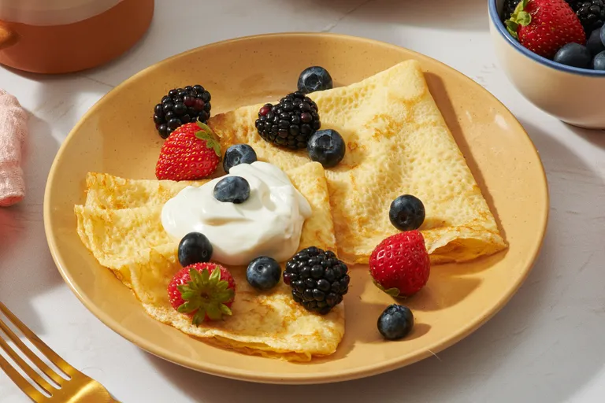

Basic Crepes

Description
This simple but delicious crêpe recipe can be made in minutes from ingredients that everyone has on hand.
Ingredients
- 2 large eggs
- 1/2 cup milk
- 1/2 water
- 1/4 teaspoon salt
- 1 cup all-purpose flour
- 2 tablespoons butter,melted
Steps
- Gather all ingredients.
- Whisk eggs, milk, water, and salt together in a large mixing bowl; add flour and butter and whisk vigorously until smooth.
- Heat a lightly oiled griddle or frying pan over medium-high heat. Pour or scoop the batter onto the pan, using approximately 1/4 cup for each crepe. Tilt the pan with a circular motion so that the batter coats the surface evenly.
- Cook until the top of the crepe is no longer wet and the bottom has turned light brown, 1 or 2 minutes. Run a spatula around the edge of the skillet to loosen the crepe; flip and cook until the other side has turned light brown, about 1 minute more.
- Serve hot. Enjoy!
Home